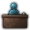

Pop Job modding
Version
This article is for the PC version of Stellaris only.
This page is about how to modify existing and how to create new Jobs.
Social Strata
A Social Stratum is the position of a group of Pops in a society. They are defined at "Stellaris/common/pop_categories/.
In the planet population view, jobs are grouped by strata and strata are sorted based on the order they are defined in files.
Data Structure
Modifiers and conditions are pop scope.
| Property | Description |
|---|---|
| rank = <int> | The social rank of this stratum. Vanilla uses ranks 0 (e.g. Slave) to 3 (e.g. Elite). |
| clothes_texture_index = <int> | The clothes index the portrait of this Pop will use. Only relevant to species portraits with clothes. |
| change_job_threshold = <float> | If a pop of this Stratum is employed, another job must have at least this many times the weight of the current job to make this pop switch to the new job. Should be greater than 1. Vanilla uses values from 1.15 to 2.0. Defined for all vanilla job categories except purge and assimilation. |
| keep_from_former_job = <yes/no> | Default no. If yes, pops remain in this category after they become unemployed. Used for Elite and Specialist in vanilla. |
| demotion_time = <int> | (Optional) How long, in days, a pop of this category will take to demote. Defined (sometimes as 0) in vanilla for every pop category with a rank greater than 0 except worker. |
| should_apply_unemployment_penalties = { <conditions> } | If this block of conditions (Pop scope) evaluates to true, the modifiers in the unemployment_penalties block are applied and the unemployment empire alert is triggered. Vanilla usually disable unemployment alert for Pops of high living standard, being able to produce resources if unemployed. |
| unemployment_penalties = { <modifiers> } | A block of modifiers applied to unemployed pops of this category if should_apply_unemployment_penalties is true. Used to apply happiness penalties in vanilla.
|
| unemployment_resources = { <economy unit> } |
|
| resources = { <economy unit> } | An economy unit that defines the resource production and upkeep of all pops in this category. Used in vanilla to define pop basic resource upkeep, as well as the strategic resources produced by some Lithoid traits. Scripted variables used here in vanilla are defined in Stellaris/common/scripted_variables/01_scripted_variables_megacorp.txt.
|
pop_modifier = {
|
A block of modifiers applied to all Pops of this Stratum. Modifiers that affect base |
triggered_pop_modifier = {
|
(Optional) A block of modifiers that are applied to the pop if the conditions in the potential block evaluate to true. Used in vanilla to apply a happiness bonus to unemployed pops with an unemployment happiness penalty if the Comfort the Fallen resolution is active. |
triggered_planet_modifier = {
|
|
| allow_resettlement = { <conditions> } |
|
| resettlement_cost = { <resource> = <int> } |
|
| assign_to_pop = { <conditions> } | (Optional) This block of conditions is called whenever a pop is created, moved to another planet, or gets a new owner. The pop is then assigned to whichever pop category that evaluated to true has the highest weight. |
| weight = { weight = <int> } | If a pop qualifies for more than one category via the assign_to_pop block, it will be assigned to the one with higher weight. |
Questions & Answers
If a Stratum has keep_from_former_job = yes, a Pop of this Stratum will still be of this Stratum after unemployment, until a number of days equal to the demotion_time have been passed.
For example, the  Specialist Stratum is ranked 2 with a demotion time of 1800 days, making an unemployed Pop that is formerly a Specialist job to still consider itself a Specialist and will only accept a Specialist or Elite job, until 1800 days have been passed and it will finally stop hiding itself from reality and demote itself to
Specialist Stratum is ranked 2 with a demotion time of 1800 days, making an unemployed Pop that is formerly a Specialist job to still consider itself a Specialist and will only accept a Specialist or Elite job, until 1800 days have been passed and it will finally stop hiding itself from reality and demote itself to  Worker Stratum, or "reset" its Stratum by technical.
Worker Stratum, or "reset" its Stratum by technical.
keep_from_former_job = yes or demotion_time, making Pops of this Stratum to immediately reset the Stratum after unemployment.A Slave might take jobs from  Specialist or
Specialist or  Worker Stratum, but a Slave will never receive the same amount of
Worker Stratum, but a Slave will never receive the same amount of  Consumer Goods upkeep of a Specialist or a Worker. Actually,
Consumer Goods upkeep of a Specialist or a Worker. Actually,  Slave is a special Stratum with no Jobs specifing itself of it, while it has a higher
Slave is a special Stratum with no Jobs specifing itself of it, while it has a higher weight than any of the common Strata. It also has a custom assign_to_pop.
The actual Stratum of a Pop is selected from all Strata with a custom assign_to_pop plus the current Stratum of the Job the Pop is working in. For example, a Pop with Indentured Servitude slavery type working as an  Artisan will choose its Stratum from
Artisan will choose its Stratum from  Specialist,
Specialist,  Worker and
Worker and  Slave, with Slave being with the highest
Slave, with Slave being with the highest weight, making this Pop a Slave beyond all. (Worker do also have a custom assign_to_pop.)
weight than the Specialist Stratum, and it will now be forced to consider itself a Slave.If the  Specialist Stratum and the
Specialist Stratum and the  Worker Stratum had the same
Worker Stratum had the same rank, an unemployed Specialist Pop will happily take a Worker job after unemployment and will instantly become a Worker, and if there was no Worker jobs available, the Pop will become an unemployed Specialist and needs time to demote until a Worker job is available.
weight than the Worker Stratum, a Pop in Specialist job will still be a Worker, consuming the same amount of Jobs
Jobs are defined at "common/pop_jobs/xxx.txt".
Data Structure
| Property | Description |
|---|---|
| is_capped_by_modifier = <yes/no> | Default yes. If no, this job is always considered available if other conditions are met. If there is a job uncapped by modifiers available that's open to all pops, no pops will become unemployed. |
| category = <pop category key> | The Stratum this Job is bound to. A pop will be considered of this Stratum for as long as they are employed under this job and there isn't any Strata with a custom assign_to_pop and with higher weight than this one.
|
| condition_string = <localisation key> | A localisation key to briefingly describe what kind of Pop can be employed on this Job. |
| building_icon = <building key> | Determines the building icon of this Job to be shown in the planet population view behind the Pop portrait. For example, the |
| clothes_texture_index = <int> | Optional. Determines the clothes index of a Pop working on this Job, overwritting the setting of the Stratum. |
| icon = <pop job key> | Optional. Makes this Job to use the icon of another Job. For example, the |
| possible_pre_triggers | A block of Pseudo-Conditions to determine can a Pop work in this Job. Only the following yes-or-no questions are allowed. Without the pre-triggers, the whole set of conditions will be evaluated once for each of the thousands of Pops in the galaxy, which can be performance intensive.
|
| possible | A block of Conditions to determine can a Pop work in this Job. (Pop scope) |
| resources | An Economy Units to determine the resource upkeep and production of this Job. (Planet scope, root = pop scope) |
| planet_modifier triggered_planet_modifier |
Block of Modifiers to be applied to the Planet. Modifiers that add |
| country_modifier triggered_country_modifier |
Block of Modifiers to be applied to the Empire. Modifiers that add |
| pop_modifier triggered_pop_modifier |
A block of Modifiers to be applied to the Pop. Modifiers that add defense armies go here. See Army modding for details of Pop-spawned defense armies. |
| weight | A Pop will attempt to take Jobs with higher weight for it. (Pop scope)
In Phoenix 4.0 the scope for the weight is pop_group |
Questions & Answers
- If you are asking about how to make a Job to produce more resources of a certain type, head to the
resourceblock and find its economy category, then head to the "common/economy_categories" to find what kind of modifiers are generated for this economy category.- For example,
 Researcher has its own economy category that "produces_mult" modifiers would be generated, making modifiers like
Researcher has its own economy category that "produces_mult" modifiers would be generated, making modifiers like job_researchers_physics_research_produces_multusable. However, since "produces_add" modifiers won't be generated, it's impossible to have researchers produce resources they originally can't, unless you overwrite the economy categories and force it to generate your required kind of modifiers. - Also,
 Miner has its own economy category that both "produces_mult" and "produces_add" modifiers would be generated, making
Miner has its own economy category that both "produces_mult" and "produces_add" modifiers would be generated, making job_miners_minerals_produces_addusable. You can also use the modifierjob_miners_minor_artifacts_produces_add = 1to make Miners produce Minor Artifacts +1, just do what you want.
Minor Artifacts +1, just do what you want. - If the job in question does not have its own economy category, for example, the

Clerk, then it's impossible to make them produce more resources by modifiers without affecting other jobs at all.
- For example,
- If you are asking about how to make a Job to produce more modifiers, like
 Amenities,
Amenities,  Naval Capacity,
Naval Capacity,  Crime Reduction,
Crime Reduction,  Trade Value, or Administrative Cap, then you have to overwrite the Jobs and use
Trade Value, or Administrative Cap, then you have to overwrite the Jobs and use triggered_(country/planet)_modifiersto implement this. There are no modifiers to modify modifiers produced by Jobs.- However, most of the modifiers produced by Jobs are
_add. You can use_multmodifiers to multiply the overall Empire stat or Planet stat, effectively making relevant Jobs more effective. - Despite the trait Bureaucrat having a modifier that reads
planet_bureaucrats_produces_mult, don't be confused, because this modifier has no effect and all it does is to confuse you.
- However, most of the modifiers produced by Jobs are
{kind=link}
Relevant Modifiers
All jobs will generate the following modifiers for use.
- job_<key>_add = <int> - This modifier adds that many jobs to the planet.
- job_<key>_per_pop = <float> - This modifier adds X jobs to the planet, where X is the number of Pops multiplied by the value here.
- job_<key>_per_crime = <float> - This modifier adds X jobs to the planet, where X is the planet crime multiplied by the value here.
| Empire | Empire • Ethics • Governments • Civics • Origins • Mandates • Agendas • Traditions • Ascension perks • Edicts • Policies • Relics • Technologies • Custom empires |
| Pops | Jobs • Factions |
| Leaders | Leaders • Leader traits |
| Species | Species • Species traits |
| Planets | Planets • Planetary feature • Orbital deposit • Buildings • Districts • Planetary decisions |
| Systems | Systems • Starbases • Megastructures • Bypasses • Map |
| Fleets | Fleets • Ships • Components |
| Land warfare | Armies • Bombardment stance |
| Diplomacy | Diplomacy • Federations • Galactic community • Opinion modifiers • Casus Belli • War goals |
| Events | Events • Anomalies • Special projects • Archaeological sites |
| Gameplay | Gameplay • Defines • Resources • Economy • Game start |
| Dynamic modding | Dynamic modding • Effects • Conditions • Scopes • Modifiers • Variables • AI • On actions |
| Media/localisation | Maya exporter • Fonts • Portraits • Flags • Event pictures • Interface • Icons • Music • Localisation |
| Other | Console commands • Save-game editing • Steam Workshop • Modding tutorial |